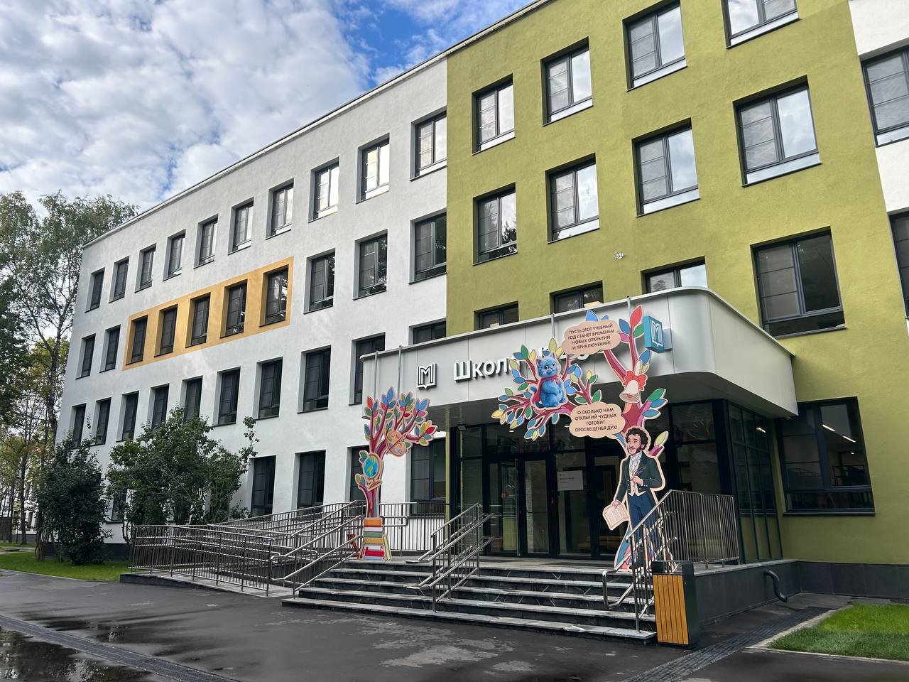
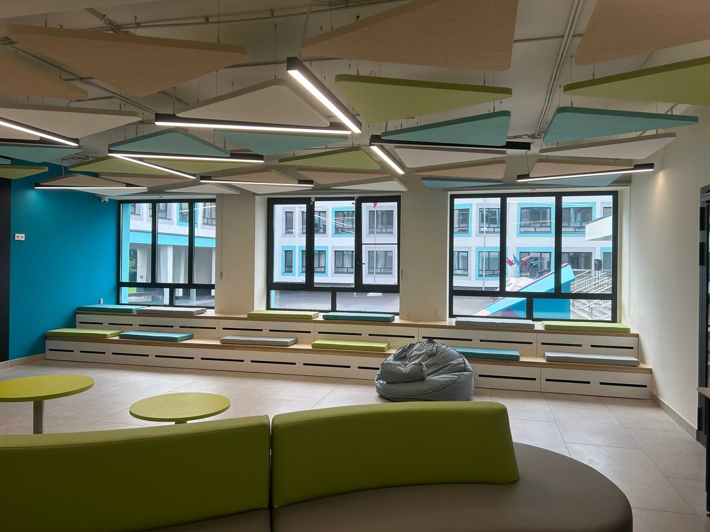

До начала
Изучаем ТЗ, график, маршруты доставки и ограничения действующего здания.
Производим и монтируем конструкции, которые ежедневно работают в классах, коридорах, на фасадах и входах.
Смотреть объекты ↗

Изучаем ТЗ, график, маршруты доставки и ограничения действующего здания.
Разделяем зоны работ, соблюдаем требования безопасности и контролируем монтаж.
Проверяем конструкции, закрываем замечания и собираем необходимый комплект документов.
Для каждого подтверждённого объекта здесь появятся адрес, год, состав работ, галерея и документы.
Документы компании ↗